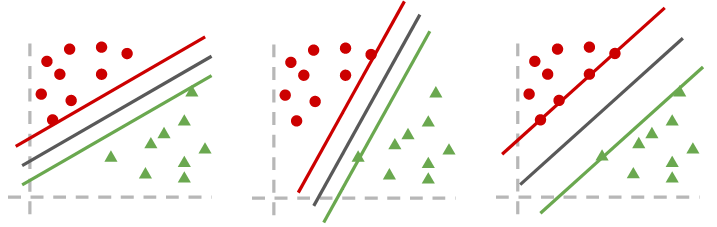
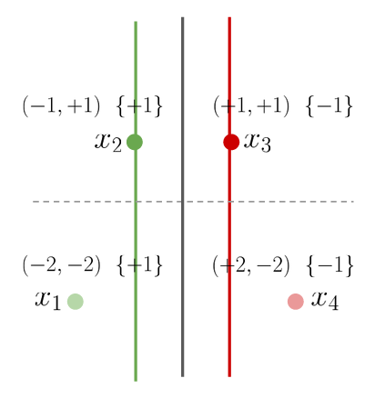

Máquinas de soporte vectorial
Contenido
6. Máquinas de soporte vectorial¶
Una máquina de soporte vectorial (support vector machine, SVM) es un modelo de aprendizaje supervisado que busca que un hiperplano óptimo
para separar un conjunto de datos
donde \(x_i \in \mathbb{R}^M\) con etiquetas \(y_i \in \{-1, +1\}\)
Considere los siguientes hiperplanos separadores
{kind=link}
Para la SVM el hiperplano óptimo es el de más a la derecha: aquel que tiene máximo margen
- Margen (\(\tau\))
Distancia del hiperplano a la muestra más cercana
A continuación veremos el problema de optimización planteado por la SVM para obtener el hiperplano óptimo
6.1. Formulación primal de la SVM¶
Se parte definiendo las siguientes condiciones
Para \(y_i = +1\) se tiene \(\langle w, x_i \rangle + b \geq 1\)
Para \(y_i = -1\) se tiene \(\langle w, x_i \rangle + b \leq 1\)
que pueden escribirse como
donde llamamos vectores de soporte a los ejemplos \((x_i, y_i)\) que cumplen con
Importante
Los vectores de soporte definen el hiperplano separador

La figura muestra un hiperplano (linea negra) que separa datos de dos clases representados por puntos verdes y rojos, respectivamente
El ejemplo \(x_1\) es un vector de soporte asociado a la clase \(-1\)
Los ejemplos \(x_2\), \(x_3\) y \(x_4\) son vectores de soporte de la clase \(+1\)
El margen entre el hiperplano y los vectores de soporte es \(\tau = \frac{1}{\|w\|}\)
Ejercicio propuesto: Para el ejemplo de la figura, planteando las ecuaciones de los vectores de soporte es posible despejar el valor de \(w\) y \(b\). En este caso \(w= (1,1)\) y \(b=-1\)
Considerando las ecuaciones anteriores como restricciones y planteando el objetivo de maximizar el margen se tiene la formulación primal de la SVM:
Este problema se resuelve utilizando multiplicadores de Lagrange
6.2. Formulación dual de la SVM¶
A partir de la formulación primal podemos definir el lagrangiano como
donde \(\alpha_i\) son los multiplicadores de Lagrange.
Derivando en función de \(w\) y \(b\) e igualando a cero tenemos
y
Reemplazando esta definición de \(w\) en el lagrangiano se obtiene la formulación dual de la SVM:
Por otra parte el hiperplano dual es
donde
para algún \(k\) tal que \(\alpha_k > 0\)
Nota
Los vectores de soporte son los ejemplos donde \(\alpha_i > 0\). En cambio para los ejemplos que no son vectores de soporte se tiene \(\alpha_i=0\)
Ejercicio: Considere el dataset que se muestra en la siguiente figura
{kind=link}
donde se han demarcado los vectores de soporte y el hiperplano de máxima separación. Obtenga los parámetros del hiperplano separador utilizando la formulación primal y luego la dual.
6.3. Margen relajado de la SVM¶
Las formulaciones anteriores no consideran el caso en que existan errores, es decir ejemplos que quedan del lado contrario de la frontera de decisión
Llamamos a estos ejemplos no separables y les asignamos una variable de compensación \(\xi\) como muestra la siguiente figura

Con las variables de compensación, la formulación primal de la SVM cambia a:
donde se ha agregado \(C>0\) que pondera la regularización de la función de costo.
Nota
El hiperparámetro \(C\) controla el trade-off entre la minimización del margen y la cantidad de ejemplos mal clasificados
Un valor grande de \(C\) privilegia un hiperplano de margen pequeño con pocos errores
Un valor pequeño de \(C\) privilegia un hiperplano de gran margen con muchos errores
{kind=link}
Si consideramos \(C\) la formulación dual cambia a:
6.4. Transformación no lineal de los datos¶
La SVM es capaz de encontrar fronteras lineales (hiperplanos) para separar los datos de entrenamiento, pero
¿Qué ocurre si en primer lugar nuestros datos no son linealmente separables?
Considere el siguiente ejemplo donde las clases se agrupan como dos circulos concéntricos:
import numpy as np
from sklearn.datasets import make_circles
np.random.seed(12345)
X, y = make_circles(noise=0.1, factor=0.1)
non_linear_transform = lambda x : np.stack((x[:, 0], x[:, 1], x[:, 0]**2 + x[:, 1]**2)).T
PhiX = non_linear_transform(X)
%matplotlib inline
import matplotlib.pyplot as plt
fig = plt.figure(figsize=(8, 4), tight_layout=True)
ax = fig.add_subplot(1, 2, 1)
for y_ in np.unique(y):
ax.scatter(X[y==y_, 0], X[y==y_, 1], label=f'clase {y_}',
c=y[y==y_], cmap=plt.cm.RdBu_r, vmin=0, vmax=1)
ax.set_title('Espacio original')
ax.legend()
ax = fig.add_subplot(1, 2, 2, projection='3d')
for y_ in np.unique(y):
ax.scatter(PhiX[y==y_, 0], PhiX[y==y_, 1], PhiX[y==y_, 2],
c=y[y==y_], cmap=plt.cm.RdBu_r, vmin=0, vmax=1)
ax.view_init(elev=15., azim=45)
ax.set_title('Espacio transformado');
La subfigura izquierda muestra los datos en su espacio original (dos dimensiones). Claramente no es posible separarlos con un hiperplano
Considere ahora la siguiente transformación no lineal \(\phi: \mathbb{R}^2 \to \mathbb{R}^3\) definida como
La subfigura derecha muestra los datos en el espacio transformado (tres dimensiones). En este espacio si se pueden separar por un hiperplano
Nota
Generalmente es más fácil encontrar hiperplanos separadores (lineales) en espacios aumentados. El hiperplano en el espacio aumentado corresponde a una frontera no lineal en el espacio de entrada
6.5. Kernels y SVM¶
Un kernel (definido positivo) es un producto interno en un espacio de features implicito y generalmente de alta dimensionalidad
Un kernel \(\kappa: \mathcal{X} \times \mathcal{X} \to \mathbb{R}\) cumple lo siguiente
donde \(\phi\) es una transformación no lineal que es inducida por el kernel
Nota
La ecuación anterior se conoce como el truco del kernel
Veamos dos kernels ampliamente utilizados
El primero es el kernel polinomial con hiperparámetros \(c_0\), \(d\) y \(\gamma>0\)
Por ejemplo para \(d=2\), \(c_0=1\), \(\gamma=1\) y \(x_i \in \mathbb{R}\) este kernel induce una transformación no lineal
El segundo es el kernel gaussiano o RBF (radial basis function) con hiperparámetro \(\gamma>0\)
cuyo transformación no lineal inducida es
Nota
El espacio inducido por el kernel RBF es de dimensionalidad infinita
Advertencia
Controlando \(\gamma\) es muy fácil obtener un espacio donde los datos sean linealmente separables, sin embargo esto puede inducir a sobreajuste, como muestra la siguiente figura
{kind=link}
En la subfigura izquierda se ha utilizado un valor de \(\gamma\) pequeño (hiperplano poco flexible)
En la subfigura derecha se ha utilizado un valor de \(\gamma\) grande (hiperplano muy flexible)
Consejo
Cuando utilizamos kernels, el hiperparámetro \(C\) cobra mayor relevancia. Utilizando un valor de \(C\) pequeño privilegiamos un hiperplano más suave (menos complejo) con margen ancho: regularización
Advertencia
Los hiperparámetros de la SVM, como \(\gamma\) y \(C\), son sensibles. Debemos calibrarlos utilizando técnicas de validación
Utilizando el truco del kernel no es necesario conocer la transformación no lineal \(\phi\). Basta reemplazar \(\langle \phi(x_i), \phi(x_j) \rangle\) por \(\kappa(x_i, x_j)\) en la formulación dual de la SVM como se muestra a continuación:
y el hiperplano utilizando kernels es:
6.6. SVM para clasificación con scikit-learn¶
La librería scikit-learn tiene implementaciónes de la SVM para clasificación y para regresión
La clase de SVM para clasificación es sklearn.svm.SVC
Sus argumentos principales son
C: El hiperparámetro de regularizaciónkernel: Las opciones sonlinear: Sin kernelpoly: Kernel polinomial (se debe especificardegreeycoef0)rbf: Kernel Gaussiano (se debe especificargammaUna función de Python que corresponda a un kernel matemáticamente válido
gamma,degree,coef0: Los hiperparámetros de los kernelstol: Tolerancia para el criterio de detención del algoritmoprobability: Booleano que especifica si se deben calcular probabilidades (aumenta el costo computacional)
Sus métodos principales son
fit(X,y): Entrena la SVMpredict(X): Retorna predicción dura deXpredict_proba(X): Retorna la predicción probabilística deX(sólo siprobability=True)get_params(): Retorna un diccionario con los nombres y valores de los parámetros de la SVM y del kernelscore(X, y): Retorna el accuraccy promedio del modelodecision_function(X): Retorna la frontera de decisión evaluada enX
El resultado para el ejemplo anterior utilizando un kernel lineal es:
from sklearn.svm import SVC
from sklearn.preprocessing import StandardScaler
from sklearn.pipeline import make_pipeline
model = make_pipeline(StandardScaler(),
SVC(kernel='linear'))
model.fit(X, y);
Consejo
Se recomienda estandarizar los datos antes de entrenar la SVM para facilitar la optimización numérica
Con decision_function podemos visualizar la frontera de decisión el espacio original
En este caso un kernel lineal es claramente inapropiado para el problema
def plot_decision_boundary(model, ax, xmin=-1.5, xmax=1.5, title=None):
x = np.linspace(xmin, xmax, num=100)
xx, yy = np.meshgrid(x, x)
hiperplane = model.decision_function(np.stack((xx.ravel(), yy.ravel())).T).reshape(xx.shape)
ax.pcolormesh(xx, yy, hiperplane, cmap=plt.cm.RdBu_r)
ax.scatter(X[:, 0], X[:,1], c='k', alpha=0.5, s=20)
if title is not None:
ax.set_title(title)
fig, ax = plt.subplots(figsize=(4, 4), tight_layout=True)
plot_decision_boundary(model, ax)

Intentemos ahora con un kernel Gaussiano y veamos la influencia de gamma en el hiperplano separador:
from sklearn.svm import SVC
from sklearn.preprocessing import StandardScaler
from sklearn.pipeline import make_pipeline
fig, ax = plt.subplots(2, 3, figsize=(8, 6), tight_layout=True)
for ax_, gamma_ in zip(ax.ravel(), [0.001, 0.01, 0.1, 1.0, 10., 100.]):
model = make_pipeline(StandardScaler(),
SVC(C=1, kernel='rbf', gamma=gamma_))
model.fit(X, y)
plot_decision_boundary(model, ax_, title=f'gamma: {gamma_}')

Nota
Un valor pequeño de \(\gamma\) produce un hiperplano demasiado suave. Mientras que un valor demasiado grande produce un hiperplano muy flexible que se sobreajusta facilmente a los datos
Podemos realizar validación cruzada de los parámetros más relevantes utilizando las herramientas de Scikit-learn:
model = make_pipeline(StandardScaler(), SVC())
model.get_params()
{'memory': None,
'steps': [('standardscaler', StandardScaler()), ('svc', SVC())],
'verbose': False,
'standardscaler': StandardScaler(),
'svc': SVC(),
'standardscaler__copy': True,
'standardscaler__with_mean': True,
'standardscaler__with_std': True,
'svc__C': 1.0,
'svc__break_ties': False,
'svc__cache_size': 200,
'svc__class_weight': None,
'svc__coef0': 0.0,
'svc__decision_function_shape': 'ovr',
'svc__degree': 3,
'svc__gamma': 'scale',
'svc__kernel': 'rbf',
'svc__max_iter': -1,
'svc__probability': False,
'svc__random_state': None,
'svc__shrinking': True,
'svc__tol': 0.001,
'svc__verbose': False}
from sklearn.model_selection import GridSearchCV
param_grid = {'svc__C': [0.1, 1.0, 10.0, 100., 1000.],
'svc__kernel': ['rbf'],
'svc__gamma': [0.001, 0.01, 0.1, 1.0, 10., 100.]}
validator = GridSearchCV(model, param_grid, cv=5)
validator.fit(X, y)
validator.best_params_
{'svc__C': 0.1, 'svc__gamma': 1.0, 'svc__kernel': 'rbf'}
fig, ax = plt.subplots(figsize=(4, 4), tight_layout=True)
plot_decision_boundary(validator, ax)

Ver también
Puede revisar ejemplos similares en la documentación de scikit-learn
También puede profundizar en las variantes del algoritmo SVM aquí